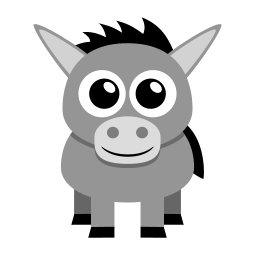

The donkey or ass (Equus africanus asinus)[1][2] is a domesticated member of the horse family, Equidae. The wild ancestor of the donkey is the African wild ass, E. africanus. The donkey has been used as a working animal for at least 5000 years. There are more than 40 million donkeys in the world, mostly in underdeveloped countries, where they are used principally as draught or pack animals. Working donkeys are often associated with those living at or below subsistence levels. Small numbers of donkeys are kept for breeding or as pets in developed countries. The donkey or ass (Equus africanus asinus)[1][2] is a domesticated member of the horse family, Equidae. The wild ancestor of the donkey is the African wild ass, E. africanus. The donkey has been used as a working animal for at least 5000 years. There are more than 40 million donkeys in the world, mostly in underdeveloped countries, where they are used principally as draught or pack animals.
Go to
Turtles are ectotherms—animals commonly called cold-blooded—meaning that their internal temperature varies according to the ambient environment. However, because of their high metabolic rate, leatherback sea turtles have a body temperature that is noticeably higher than that of the surrounding water. Turtles are classified as amniotes, along with other reptiles, birds, and mammals. Like other amniotes, turtles breathe air and do not lay eggs underwater, although many species live in or around water. The study of turtles is called cheloniology, after the Greek word for turtle. It is also sometimes called testudinology, after the Latin name for turtles.Differences exist in usage of the common terms turtle, tortoise, and terrapin, depending on the variety of English being used.[7] These terms are common names and do not reflect precise biological or taxonomic distinctions.[8]
Go to
Birds (Aves) are a group of endothermic vertebrates, characterised by feathers, toothless beaked jaws, the laying of hard-shelled eggs, a high metabolic rate, a four-chambered heart, and a strong yet lightweight skeleton. Birds live worldwide and range in size from the 5 cm (2 in) bee hummingbird to the 2.75 m (9 ft) ostrich. They rank as the world’s most numerically-successful class of tetrapods, with approximately ten thousand living species, more than half of these being passerines, sometimes known as perching birds. Birds have wings which are more or less developed depending on the species; the only known groups without wings are the extinct moa and elephant birds. Wings, which evolved from forelimbs, gave birds the ability to fly, although further evolution has led to the loss of flight in flightless birds, including ratites, penguins, and diverse endemic island species of birds. The digestive and respiratory systems of birds are also uniquely adapted for flight. Some bird species of aquatic environments, particularly seabirds and some waterbirds, have further evolved for swimming.